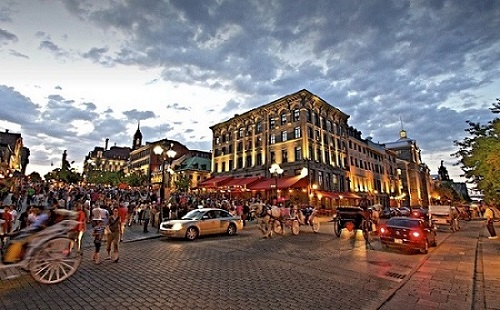
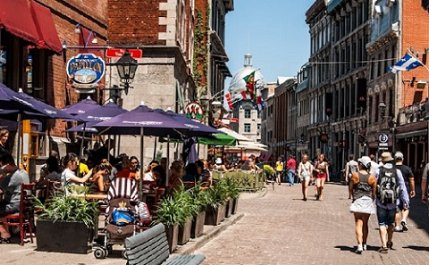
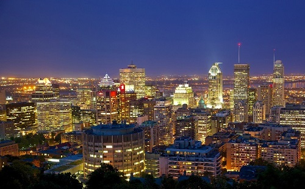
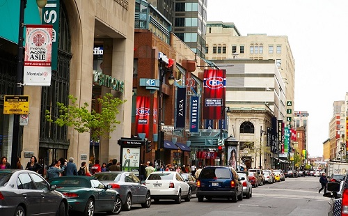
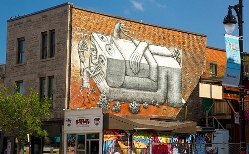
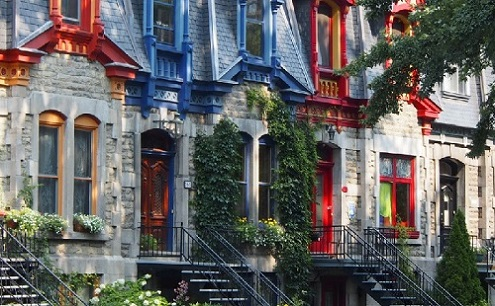
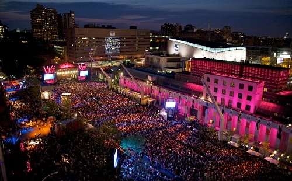
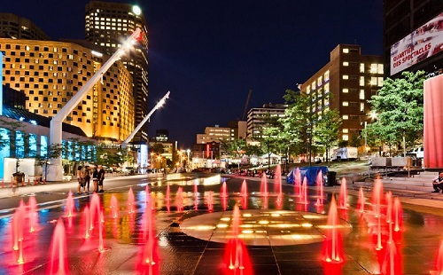
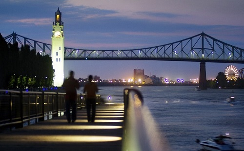
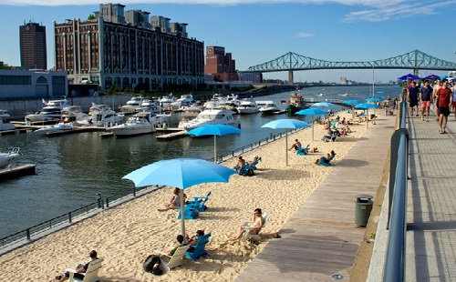

Neighborhoods
Old Montréal
The city's oldest district, Old Montréal was first founded as a fur trading post in 1605 by Samuel de Champlain.
 Downtown
The heart of Montréal and where it exemplify sophistication along with great entertainment.
 Le Plateau-Mont-Royal
Art is everything. Le Plateau-Mont-Royal is the most dense populated borough in Canada.
 Quartier Des Spectacles
The Entertainment district. Quartier Des Spectacles offers variety of exciting events and activities such as: jazz festival, light shows, and much more!
 Old Port of Montréal
The modern and historical site attractions at the Old Port of Montréal is a must see for tourists who are traveling to Montréal. Activities including boating, ice skating and also see the Montréal Clock Tower.
 